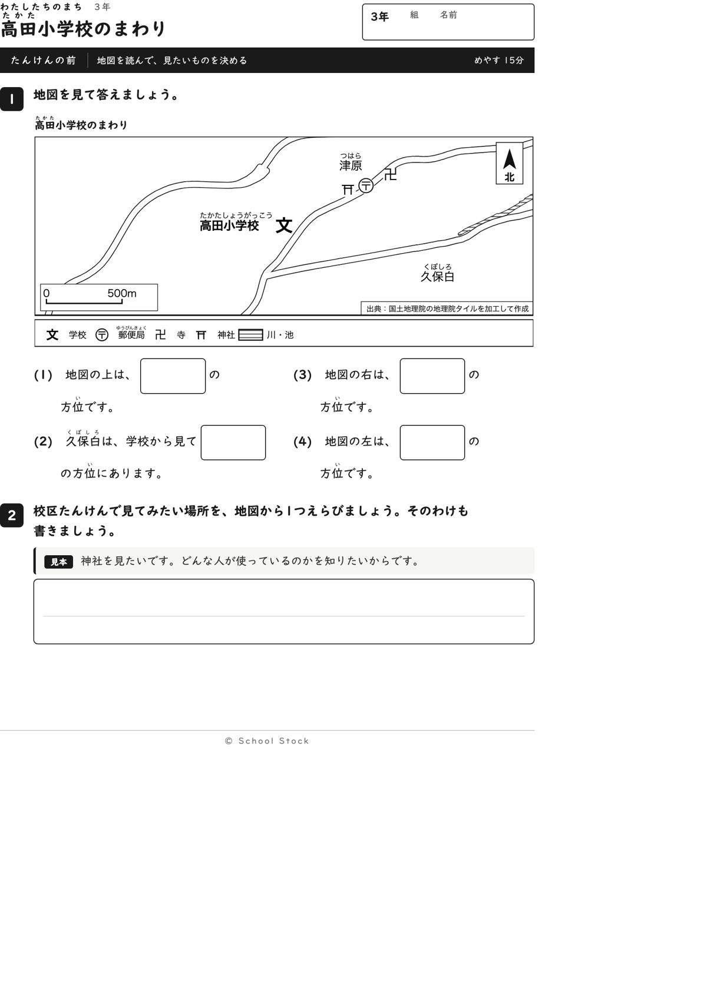
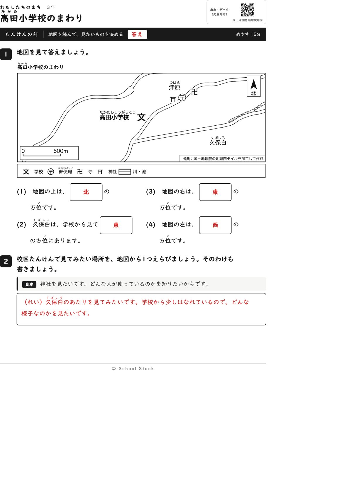
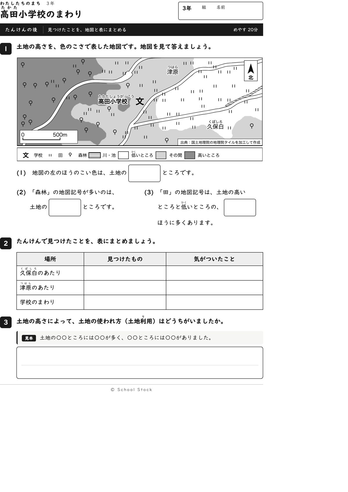
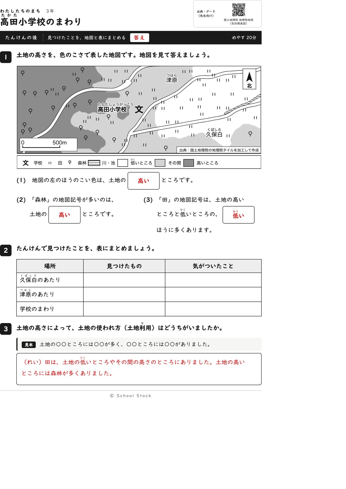
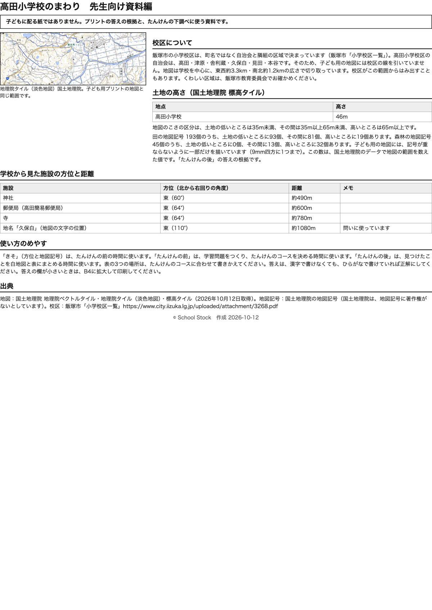

紙





直すところ
直すところはありません。
1回目のレビューで出た直し（1件・道具を直して作り直しました）
| 紙 | どこ | 何が困るか |
|---|---|---|
| 問いは短くて読めます。(3)は『田の記号を○でかこむ』なので動けますが、『そこは何の色？』で止まりそうです。選ぶ形になっていれば書けます。 |
専門家団の声（いまの紙を見て）
香月八重筆頭・全学年
三年の順序に合っています。川のない校区なので、『上は北、右は東、左は西』と久保白の方位で、方位を使う問いにまとめたのは筋が通っています。学校名の文字は『文』のすぐ左にあり、間に別の記号が入りません。『後』の(3)も二つから選ぶ形で動けます。縮尺は白い地が敷かれ、読めます。
日隈耕平社会
久保白は学校から東（110度）で、地図の文字の位置と合っています。神社60度、郵便局と寺64度は斜めなので、問いに使っていないのはきまりどおりです。田193個は低いところ93、その間81、高いところ19、森林45個は高いところ32で、答えと合います。資料編に『記号は間引いて描いている』と入っています。
藤川湊すぐ終わる子
『上は北』から『右は東』『左は西』と続くので、すぐ終わります。2番で場所を選んで理由を書くので、あまりません。『後』の(3)は田の記号を数えるつもりで見ると面白いです。
田淵さくら例がないと止まる子
問いは短く、見本が2番と『後』の3番にあります。『東』『西』は、地図の上が北だと分かれば続けて書けます。1問目でつまずきません。
轟大和読む前に諦める子
設問は3行以内で、『久保白』『津原』にはふりがながあります。(3)と(4)は箱に『東』『西』を書くだけで、書き始める入口になります。『後』の(1)は『左のほうのこい色』と聞いていて、色を見て答えられます。